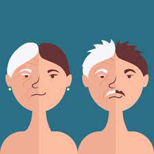

 El ayuno puede rejuvenser el cuervo,devideo a que al no consumier alimentos por almemos 2 dias el curpo consume las celulas que se encuentran con flayos en su proceso definido devido a esto el cuerpo consume estas celulas asi depurando del cuerpo las celulas ya dañadas.por consiguiente desasiendo al cuerpo de celulas con errores geneticos y dejando al cuerpo solo con las celulas sanas.